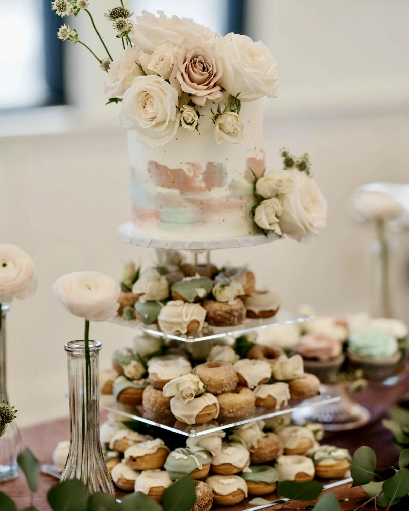
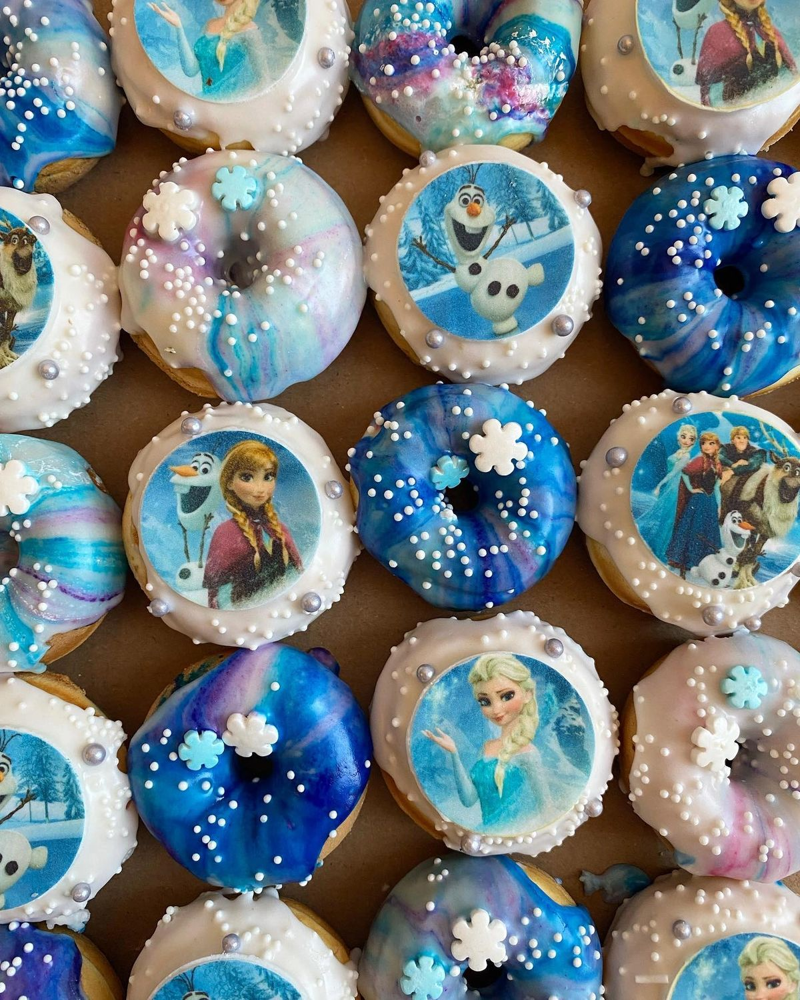
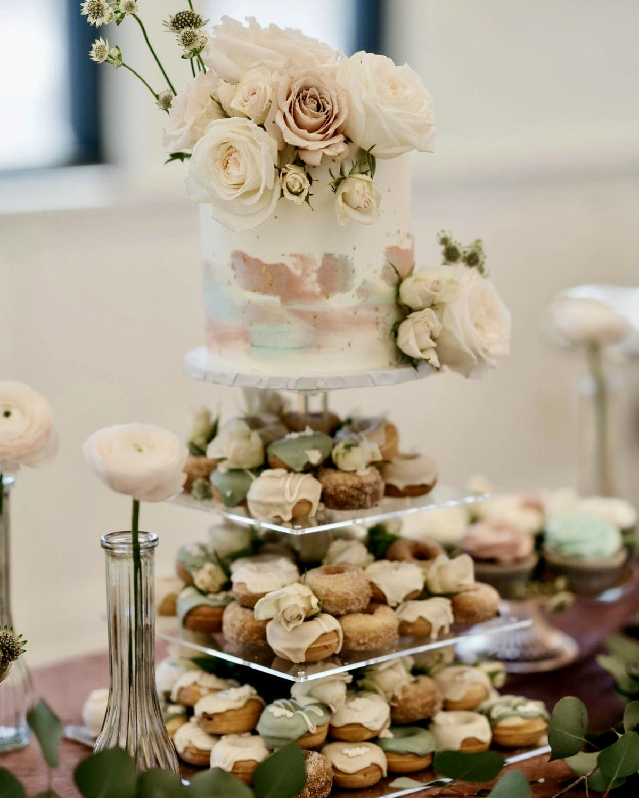
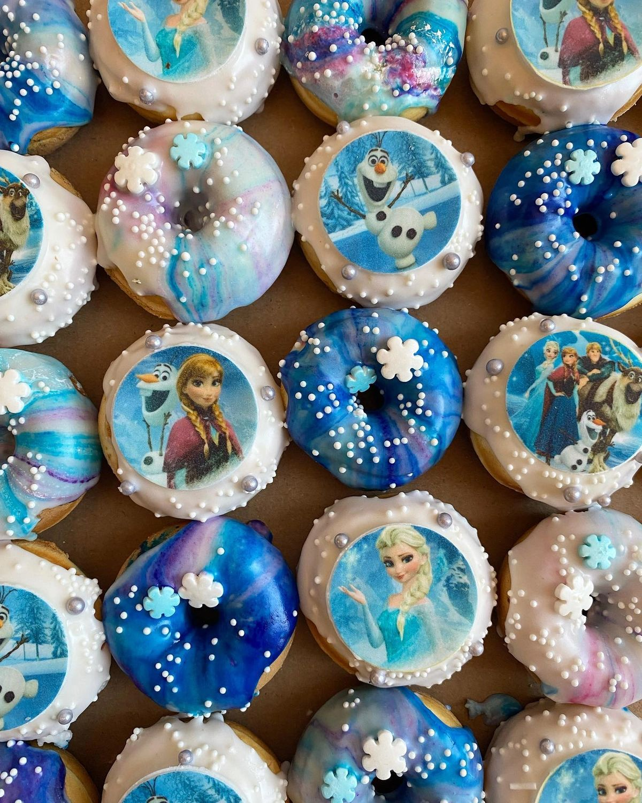
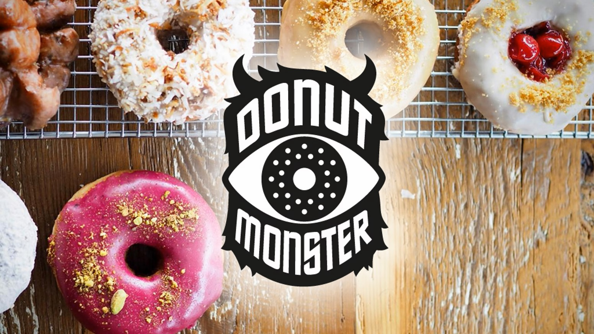
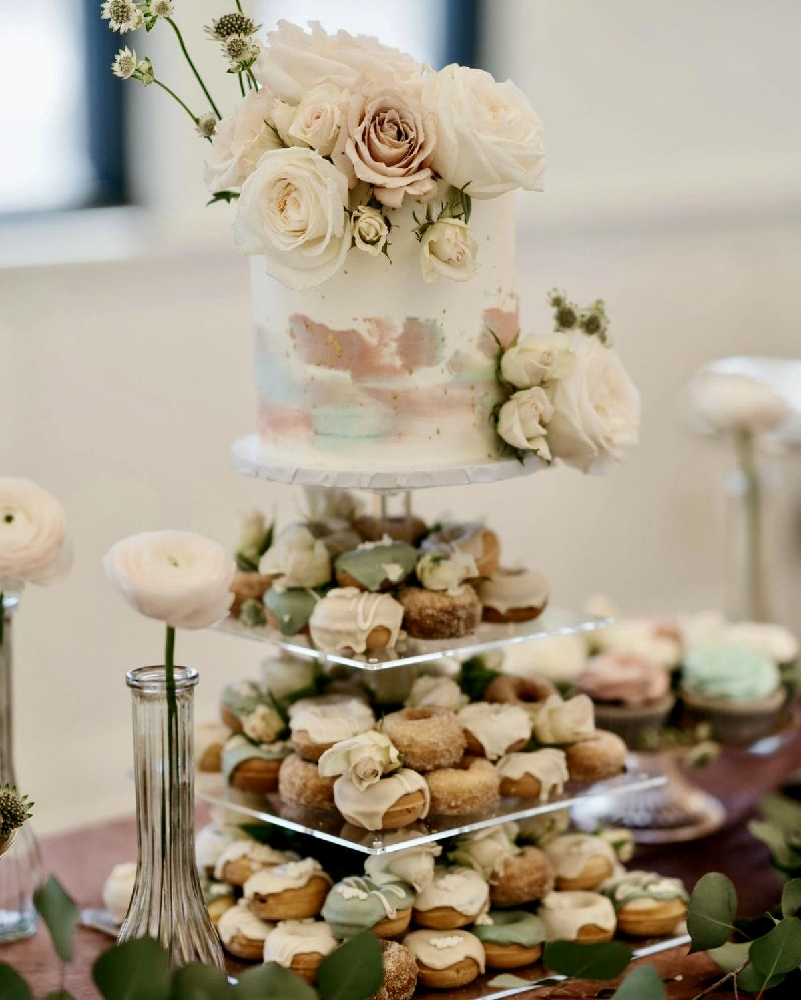
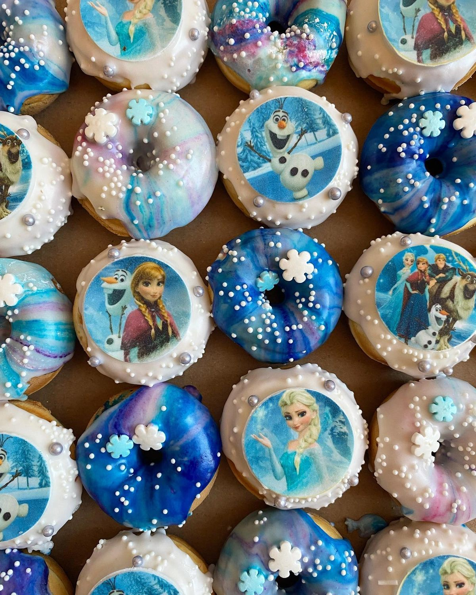
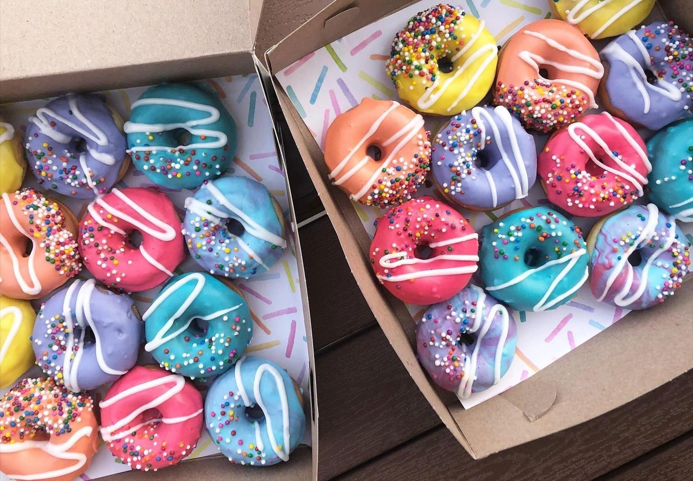
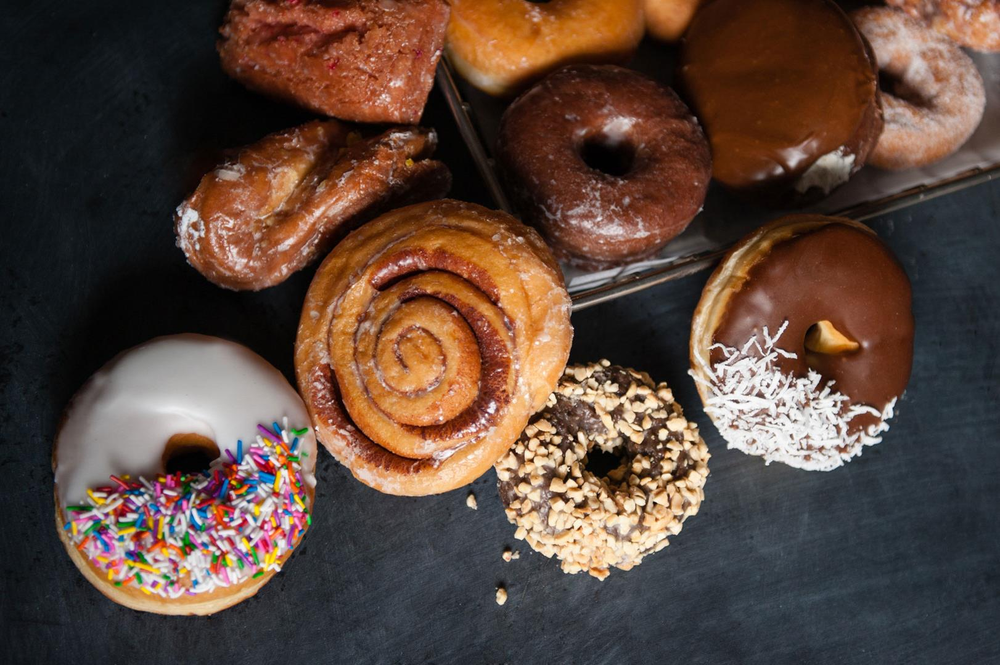

Donut Monster is a one-of-a-kind bakery based in Hamilton, Ontario. Their focus is on making doughnuts from scratch with unique flavours and high-quality ingredients. Their pastries are made with a soft and chewy yeast-risen dough, and they have vegan options as well. In addition to doughnuts, they also serve milkshakes and high-quality drip coffees and espressos. Their menu is constantly changing and growing, with many seasonal flavours and glazes. For this February, their seasonal doughnut is the Cinnamon Heart Cake, with warm nostalgic flavours to spice up the cold winter. Their other distinctive flavours include:
Donut Monster is well-known for their branding which leaves a very memorable impression, adding a creepy and cute look to their packaging with motifs of a monster’s eyes and fur. According to an article in Toque Magazine, the brand’s founder Reuben Vanderkwaak began developing his doughnuts out of his home. A stay-at-home dad, his distinctive confections were inspired by the doughnut shops he and his family discovered when cycling across America. Vanderkwaak eventually moved to a commercial kitchen, co-founding The Kitchen Collective in 2015, a non-profit co-op. The business originated as a supplier of fresh doughnuts to grocery stores and independent coffee shops in Hamilton, before opening their own shop on Locke Street in 2018. Now, they are a sensation and a top destination for any Hamilton resident in need of a sweet treat.



Darling Donuts is a shop that bakes mini gourmet doughnuts to-order. Serving Hamilton, Niagara, and the Greater Toronto area since 2018, their desserts are baked fresh with quality ingredients. They offer lots of gluten-free and vegan options to fit the needs of those with intolerances, allergies, and food preferences. On the About page of their website, the founder Alyssa describes how when “[she] went to University, [she] developed a gluten and dairy intolerance and began to focus on specialty gluten free and dairy free treats” for those who usually can’t have doughnuts or other treats on a regular basis. This philosophy remains with the company today—they want everyone to be able to enjoy some Darling Donuts! Their offerings include classics such as cinnamon sugar, vanilla and chocolate dip, powdered jelly, and birthday cake. They also have many unique specialty flavours available, including:
On top of this, they also take custom orders with unique designs, which is great for events and special occasions like birthday celebrations. There are options for topping each doughnut with a letter to send a personal message, as well as doughnuts that are shaped like letters themselves. They even offer a Wedding Donut Cake Tower, which includes six dozen doughnuts and a six inch cake. Due to their personalized nature, all of their doughnuts have to be ordered beforehand, with a minimum order of one dozen. The mini size of the pastries makes them perfect for sharing and bringing people together.
Grandad’s Donuts is a family-owned coffee and doughnut shop with a reputation for quality and freshness. They are known for their use of traditional and vintage recipes, reminiscent of the quality and care that large chains and industry giants have long forgotten. According to the CBC News, their doughnuts are made right on the store’s premises at three in the morning. Freshly baked with high-quality ingredients, their pastries are not mass-produced, packaged, and frozen like their competitors. Some of their offerings include:
Their motto is “Quality Matters”. Located on James Street North in Hamilton, they may be the best place in Canada for classic flavours done right. Grandad’s is currently operated by Samantha Whipps, the daughter of the original owners Scott and Barbara. According to an interview with Samantha in the North End Breezes, a non-profit volunteer community newspaper, her parents first met when they were both bakers at a Tim Hortons. The particular store was noteworthy, being where Tim Hortons co-founder Ron Joyce first established his doughnut college. The two shared a passion for old school doughnut baking techniques. The store first opened on May 15th, 2007, and has been family-oriented from the very beginning. Whipps’ first part time job was at the shop when she was thirteen years old, and she has now been managing the store for the past five years. The titular ‘Grandad’ the business is named after is Barb’s father Ken Marsden, who built the bench seats and oversaw the construction and creation of the shop. Their vintage recipes transport customers and claim to “bring back the memories you had with your Grandad with just one bite!” (quote from the About section on their website).
All images are from each respective store's website or social media pages.